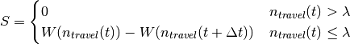
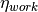
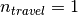
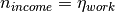

commute module¶
This module contains about activities associated with commuting to and from work. This class is an Activity (activity.Activity) that gives a Person (person.Person) the ability to commute to/ from work/ school and satisfy the need Travel (travel.Travel).
This module contains the following classes:
commute.Commute(general commuting capability)commute.Commute_To_Work(commute to work/ school)commute.Commute_From_Work(commute from work/ school)
-
class
commute.Commute[source]¶ Bases:
activity.ActivityThis class allows for commuting. This class is to be derived from.
-
end(p, local)[source]¶ This function handles the end of an activity.
Parameters: - p (person.Person) – the person of interest
- local (int) – the local location (work or home)
Returns: None
-
end_commute(p)[source]¶ This function ends the commuting activity.
Note
This function is to be overridden
Parameters: p (person.Person) – the person of interest Returns: None
-
start(p)[source]¶ This handles the start of the commute activity.
- If the current location of person is at home, the person is going to work, so set the location to
location.OFF_SITE. - If the current location of the person is off site, the person is going back home, so set the location to
location.HOME.
Parameters: p (person.Person) – the person of interest Returns: None - If the current location of person is at home, the person is going to work, so set the location to
-
start_commute(p)[source]¶ This function sets the variables pertaining to starting the commute activity by doing the following:
- set the status of the person to
location.TRANSIT - set the location of the asset to
location.TRANSIT - set the person’s state start time of the commute
- set the person’s state end time for the commute
- update the asset
- update the scheduler for the travel need for the end of the commute
Parameters: p (person.Person) – the person of interest Returns: None - set the status of the person to
-
-
class
commute.Commute_From_Work[source]¶ Bases:
commute.CommuteThis class allows for the activity: commuting from work.
-
advertise(p)[source]¶ This function calculates the score of to commute from work. It does this by doing the following:
calculate advertisement only if the person is located at work (off-site)
calculate the score


- where
 is the current time
is the current time is the duration of commuting from work [minutes]
is the duration of commuting from work [minutes] is the satiation for Travel at time
is the satiation for Travel at time  is the threshold value of Travel
is the threshold value of Travel is the weight function for Travel
is the weight function for Travel
Parameters: p (person.Person) – the person of interest Returns: the advertised score Return type: float
-
calc_end_time(p)[source]¶ - calculate the end time (minutes, universal time) of the commute
- set the the end time in the person’s state
Parameters: p (person.Person) – the person of interest Returns: None
-
end(p)[source]¶ This function handles the end of an activity.
Parameters: p (person.Person) – the person of interest Returns: None
-
end_commute(p)[source]¶ This function sets the variables pertaining to ending the commute activity.
- Sets the person’s state to idle (
state.IDLE) - Updates the asset’s state and number of users
- Sets the travel magnitude
- Sets the work magnitude to  to allow for work to be the next activity, even if commute ends begin the work-start time
- Sets the person’s state’s end time
Parameters: - p (person.Person) – person of interest
- destination (int) – a local location where the commute ends (home or workplace)
Returns: None
- Sets the person’s state to idle (
-
start(p)[source]¶ This handles the start of the commute activity.
- If the current location of person is at home, the person is going to work, so set the location to
location.OFF_SITE - If the current location of the person is off site, the person is going back home, so set the location to
location.HOME
Parameters: p (person.Person) – the person of interest Returns: None - If the current location of person is at home, the person is going to work, so set the location to
-
-
class
commute.Commute_To_Work[source]¶ Bases:
commute.CommuteThis class allows for the activity: commute to work
-
advertise(p)[source]¶ This function calculates the score of commuting to work by doing the following:
calculate advertisement only if the person is located at work (off-site)
calculate the score
- where
- is the current time
- is the duration of commuting to work [minutes]
- is the satiation for Travel at time
- is the threshold value of Travel
- is the weight function for Travel
Parameters: p (person.Person) – the person of interest Return score: the advertisement score Return type: float
-
calc_end_time(p)[source]¶ Given the commute duration, store the end time. This function does the following:
- calculate the end time [universal time] of the commute.
- store the end time in the person.state
Parameters: p (person.Person) – the person of interest Returns: None
-
end(p)[source]¶ This function handles the logistics of ending the commute to work activity.
Parameters: p (person.Person) – the person of interest Returns: None
-
end_commute(p)[source]¶ This function handles the logistics concerning ending the commute. Specifically, this function does the following:
- the asset is freed up from use
- the magnitude of the travel need is set 
- the person’s state is set to idle (
state.IDLE) - the person’s location is set to the location of the job
- the asset’s location is set to the location of the job
- the person’s income need is set to 
- update the commute to work duration
- calculate the time until the next leave work event
- update the schedule for the travel need
Parameters: p (person.Person) – the person of interest Returns:
-
start(p)[source]¶ This function handles the start of the commute to work activity. If the current location of person is at home, the person is going to work, so set the location to workplace location (
location.OFF_SITE)Parameters: p (person.Person) – the person of interest Returns: None
-
start_commute(p)[source]¶ This function sets the variables pertaining to starting the commute to work activity. Specifically, the function does the following:
- set the person’s status to
state.TRANSIT - set the asset’s location to
location.TRANSIT - set the person’s state start time to the current time
- calculate the end time of commute to work
- update the asset’s update
- update the scheduler for the travel need to take into account the end of the commute
- update the scheduler for the income need to take into account the end of the commute
Parameters: p (person.Person) – the person of interest Returns: None - set the person’s status to
-